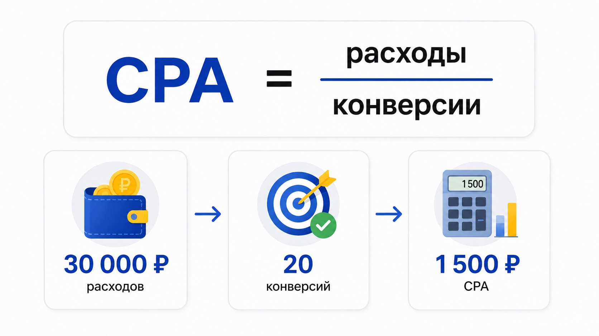

Блог о платном трафике
CPA в Яндекс Директе: что это и как считать стоимость конверсии
CPA в Яндекс Директе показывает, сколько рекламных денег в среднем потребовалось, чтобы получить одно целевое действие: заявку, заказ, звонок, регистрацию или другую конверсию.
Например, на рекламу потратили 30 000 рублей и получили 20 заявок.
CPA = 30 000 / 20 = 1 500 рублей.
То есть одна заявка в среднем обошлась в 1 500 рублей.
На первый взгляд все просто. Путаница начинается дальше: в Яндекс Директе есть фактический CPA, целевая цена конверсии и отдельная модель оплаты за конверсии. Термины похожи, но означают разные вещи.
Что такое CPA простыми словами
CPA расшифровывается как Cost Per Action - стоимость действия.
Формула:
CPA = расходы на рекламу / количество конверсий
Что считать конверсией, зависит от бизнеса. Это может быть:
- отправленная заявка;
- звонок;
- оформленный заказ;
- покупка;
- регистрация;
- другое полезное действие пользователя.
В Яндекс Метрике такие действия настраиваются как цели. Метрика фиксирует их достижение, а Директ может использовать эти данные при оценке и оптимизации рекламы. Если основы пока не сложились в общую картину, начните со статьи о том, как работает Яндекс Директ.
Сам CPA при этом не означает, что Яндекс обязательно списывает деньги именно за заявки. Это показатель эффективности рекламы.
Например, вы можете платить Яндексу за клики, но потом посмотреть статистику и увидеть, что средняя стоимость заявки составила 2 000 рублей. Эти 2 000 рублей и будут фактическим CPA по цели «Заявка».
Как рассчитать CPA в Яндекс Директе
Допустим, за месяц получили такие результаты:
Расходы на рекламу - 60 000 рублей.
Количество заявок - 30.
Расчет:
60 000 / 30 = 2 000 рублей
CPA заявки составляет 2 000 рублей.
Если при тех же расходах удалось получить 40 заявок:
60 000 / 40 = 1 500 рублей
CPA снизился до 1 500 рублей.
Поэтому этот показатель удобно использовать для сравнения рекламных кампаний, объявлений, аудиторий и периодов.
Но есть одна оговорка: сравнивать нужно одинаковые действия.
Заявка и просмотр страницы контактов - две совершенно разные конверсии. Если одна кампания получает заявки по 3 000 рублей, а другая посещения контактов по 300 рублей, нельзя сделать вывод, что вторая работает в десять раз лучше.
CPA и CPC: в чем разница
CPC показывает стоимость одного клика по объявлению.
CPA показывает стоимость нужного действия после перехода.
Допустим:
100 кликов по 50 рублей = 5 000 рублей расходов.
Из этих 100 посетителей заявку оставили 5 человек.
Получаем:
CPC = 50 рублей.
CPA = 1 000 рублей.
Из-за этого слишком сильно ориентироваться на дешевый клик я бы не стал.
Можно покупать клики по 20 рублей и почти не получать заявок. А можно платить по 100 рублей за переход и получать клиентов дешевле.
Для бизнеса обычно важнее второй вариант.
Сам Яндекс сейчас разделяет стратегии, ориентированные на получение кликов, и стратегии, ориентированные на целевые действия.
Что такое целевой CPA
Вот здесь чаще всего и возникает путаница.
Фактический CPA мы считаем после получения результатов: расходы / конверсии.
Целевой CPA - это стоимость конверсии, на которую мы хотим ориентировать рекламную стратегию.
В Яндекс Директе стратегия «Максимум конверсий» может работать с ограничением по средней цене конверсии. Рекламодатель задает желаемое значение, а алгоритм старается получать максимум конверсий в рамках этих условий.
Допустим, мы хотим получать заявки примерно по 2 000 рублей. Указываем эту цену в стратегии.
Это не значит, что каждая следующая заявка будет стоить ровно 2 000 рублей. При оплате за клики заданное среднее значение служит ориентиром для алгоритма. Отдельные конверсии и даже отдельные дни могут заметно отличаться по стоимости. Яндекс оценивает средний результат стратегии за календарную неделю.
Поэтому картина вполне может выглядеть так:
- первая заявка - 1 200 рублей;
- вторая - 2 700 рублей;
- третья - 1 900 рублей.
Сам по себе такой разброс нормален. Смотреть нужно на среднее значение за достаточный период.
CPA и оплата за конверсии - это разные вещи
CPA часто ошибочно называют моделью оплаты рекламы.
Точнее разделять эти понятия.
CPA - показатель стоимости действия.
Оплата за конверсии - модель оплаты внутри стратегии «Максимум конверсий».
Сейчас Яндекс Директ позволяет в этой стратегии выбрать оплату за клики или оплату за конверсии. При втором варианте рекламодатель платит за выбранные целевые действия на сайте.
Получается:
- Фактический CPA - сколько реально стоило целевое действие.
- Целевой CPA - на какую стоимость мы ориентируем алгоритм.
- Оплата за конверсии - способ списания рекламного бюджета.
Вот эти три понятия лучше сразу разделить. Тогда большая часть терминологии вокруг CPA становится понятной.
Откуда Яндекс знает, что произошла конверсия
Директу нужны данные.
Самый распространенный вариант для сайта - установить Яндекс Метрику и настроить цели.
Например:
- человек отправил форму;
- Метрика зафиксировала достижение цели;
- Директ получил информацию о конверсии;
- результат появился в статистике и может использоваться алгоритмом для дальнейшей оптимизации.
В Метрике можно отслеживать отправку формы, клики по телефону, переходы в мессенджеры, покупки и другие действия.
Яндекс также позволяет работать с онлайн-конверсиями, звонками и офлайн-конверсиями через Центр конверсий. Это полезно для бизнеса, где рекламная заявка еще не равна продаже.
Например, человек оставил заявку на строительство дома, менеджер связался с ним, а договор заключили через несколько недель. Если смотреть только на форму на сайте, часть реальной картины потеряется. Как это выглядит на живом проекте, видно в кейсе по рекламе строительства домов, где CPA удалось снизить в два раза.
Какой CPA считается хорошим
Универсальной цифры нет.
CPA в 5 000 рублей может быть прекрасным для одного бизнеса и совершенно убыточным для другого.
Все зависит от того, сколько денег приносит клиент и какая доля заявок превращается в продажи.
Простой пример.
Пусть из десяти заявок покупает один человек.
С одной продажи бизнес может позволить себе потратить на привлечение клиента 20 000 рублей.
Тогда предельный CPA заявки без учета других расходов:
20 000 / 10 = 2 000 рублей.
Если заявка обходится в 800 рублей, запас по экономике есть.
Если в 4 000 рублей, реклама при таких вводных уже не сходится.
Поэтому я бы вообще не искал в интернете ответ на вопрос «какой нормальный CPA в Яндекс Директе». Без экономики конкретного бизнеса эта цифра почти бесполезна.
Яндекс тоже рекомендует оценивать цену конверсии через ее экономическую ценность и итоговую прибыль, а не назначать случайное значение.
Почему слишком низкий целевой CPA может ухудшить рекламу
Каждому хочется заявок дешевле.
Допустим, фактически кампания получает их примерно по 3 000 рублей.
Рекламодатель смотрит на статистику и решает: «Хочу по 1 000». Меняет целевую цену.
Но рынок от этого дешевле не становится.
Алгоритму приходится искать пользователей, у которых прогнозируемая вероятность конверсии позволяет уложиться в новое ограничение. Если подходящего трафика мало, кампания может начать получать меньше показов и конверсий.
Яндекс прямо рекомендует задавать достижимую стоимость конверсии и ориентироваться на накопленную статистику. Для обучения стратегии требуется достаточное количество данных. В справке сейчас указано минимальное значение 10 конверсий в неделю, а первоначальный результат рекомендуют оценивать через 7-14 дней.
Поэтому снижать целевой CPA в несколько раз одним движением обычно плохая идея.
Сначала нужно понять, почему текущая заявка стоит столько, сколько стоит.
От чего зависит CPA
Грубо его можно разложить на две части: стоимость привлечения посетителя + конверсия сайта.

Представим два сайта.
У первого:
- клик стоит 50 рублей;
- заявку оставляет 1 человек из 100.
Получаем CPA около 5 000 рублей.
У второго тот же клик стоит 50 рублей, но заявку оставляют 5 человек из 100.
CPA уже около 1 000 рублей.
Рекламный трафик стоит одинаково. Разница возникла после перехода на сайт.
Поэтому снижать CPA можно далеко не одними настройками Яндекс Директа.
На результат влияют:
- аудитория;
- поисковые запросы и таргетинги;
- объявления;
- предложение;
- посадочная страница;
- форма заявки;
- корректность аналитики;
- качество самой выбранной цели.
Иногда директолог неделю перебирает настройки кампании, хотя главная проблема находится в первом экране сайта.
CPA и CPL: чем отличаются
CPL расшифровывается как Cost Per Lead - стоимость лида.
CPA шире.
Действием для CPA может быть заявка, звонок, регистрация, покупка или другая конверсия.
Если в рекламе основная цель - получение заявок, то CPA этой цели по смыслу будет равен CPL.
Поэтому в отчетах по лидогенерации можно встретить оба обозначения.
Например:
CPA заявки - 1 500 рублей.
CPL - 1 500 рублей.
В этом случае речь идет об одном результате.
Где посмотреть CPA в Яндекс Директе
CPA можно анализировать в статистике рекламных кампаний.
В Мастере отчетов Яндекс рекомендует использовать метрики CPA, CR и количество конверсий для оценки текущей цены конверсии.
Я бы смотрел минимум на несколько показателей вместе:
- расход;
- клики;
- конверсии;
- CPA;
- конверсию сайта;
- качество полученных обращений.
Последний пункт особенно важен.
Можно увидеть в отчете прекрасный CPA, а потом открыть CRM и обнаружить, что большая часть заявок мусорные.
Тогда рекламный показатель хороший только на бумаге.
Как снизить CPA в Яндекс Директе
Первым делом нужно найти место, где теряются деньги.
Если много дорогих и нецелевых переходов, проблема может быть в рекламе.
Если трафик целевой, но люди почти не оставляют заявки, нужно смотреть сайт и предложение.
Если заявок много и они дешевые, но отдел продаж их бракует, проблема может быть в выбранной цели или качестве аудитории.
Если часть заявок вообще не фиксируется, сначала нужно исправлять аналитику.
Я обычно смотрю на всю цепочку: показ -> клик -> сайт -> заявка -> квалифицированный лид -> продажа. Из чего складывается такая работа, я расписал в разделе что входит в работу над рекламой.
CPA внутри Директа показывает только часть этой цепочки.
Чем ближе рекламную оптимизацию удается привязать к реальному результату бизнеса, тем полезнее становится этот показатель.
Частые вопросы
CPA в Яндекс Директе - что это?
Это средняя стоимость целевого действия пользователя. Например, стоимость заявки, звонка, заказа или регистрации.
Как рассчитывается CPA?
Расходы на рекламу нужно разделить на количество полученных конверсий.
CPA и стоимость конверсии - одно и то же?
Если речь идет о фактической статистике, обычно да. Но в настройках стратегии отдельно существует целевая или средняя цена конверсии, которую рекламодатель задает алгоритму.
CPA означает оплату только за заявки?
Нет. CPA сам по себе показывает стоимость действия. В Яндекс Директе отдельно существует модель оплаты за конверсии.
Можно ли поставить любой целевой CPA?
Технически доступный диапазон определяется настройками стратегии, но экономически цена должна быть реалистичной. Слишком низкое значение способно ограничить объем доступного трафика и конверсий.
Что важнее: CPC или CPA?
Если задача рекламы - получать обращения или продажи, CPA обычно дает бизнесу гораздо больше информации. Дешевый клик сам по себе еще не означает дешевую заявку.
Что в итоге показывает CPA
CPA отвечает на один конкретный вопрос: сколько денег в среднем потратили на получение нужного действия пользователя?
Для нормальной оценки рекламы этого недостаточно. Еще нужно понимать, какую именно конверсию мы считаем, насколько качественные заявки приходят и сколько из них превращается в продажи.
Но как первый показатель эффективности лидогенерации CPA действительно удобен. Он быстро показывает, сколько рекламного бюджета приходится отдавать за результат, а не за сам факт перехода на сайт.